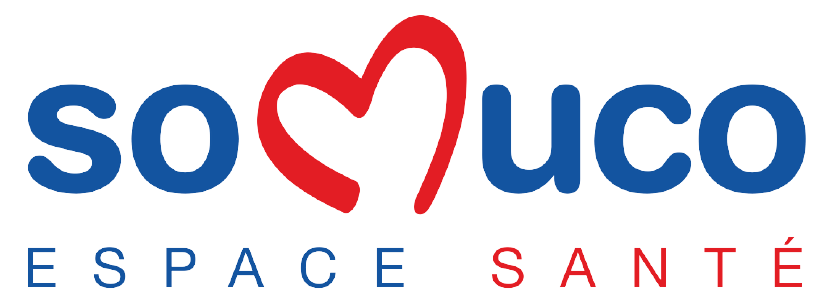
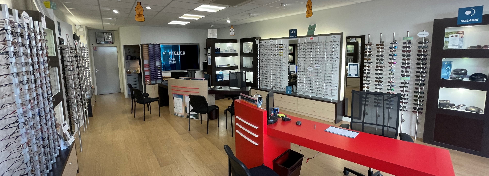
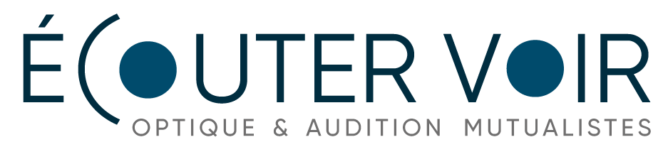

ACCUEIL
CENTRE
OPTIQUE
PHARMACIE
_________
Somuco, la santé mustualiste ouverte à vos côtés.

Le centre optique de la SOMUCO vous accueille et vous propose de nombreuses montures faites pour vous.

Centre optique
Du mardi au vendredi : 9h - 12h / 14h - 19h
Le samedi : 9h - 12h
46 bis, rue Gornet-Boivin - 10100 Romilly-sur-Seine
Tél. 03 25 24 98 00
Fax. 03 25 21 27 46
Sur Google Maps
Nos opticiens :
- Thomas LAURENT : opticien
- Alexendre MULLER : responsable optique
- Veronique LAGO : monteuse vendeuse